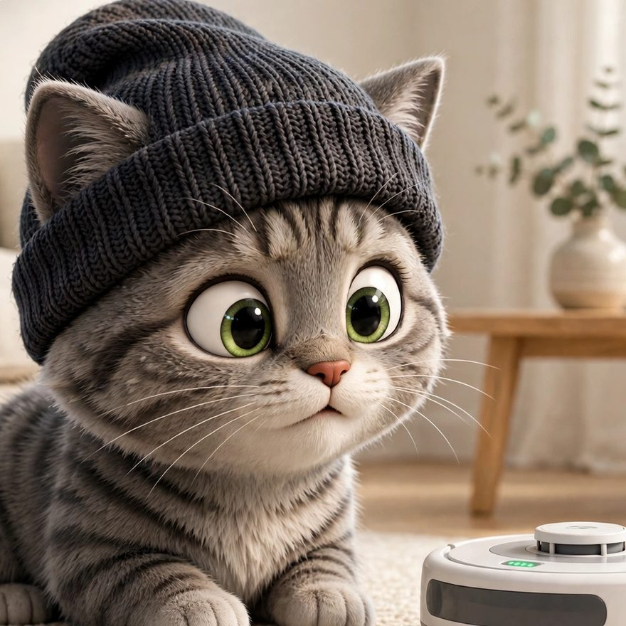
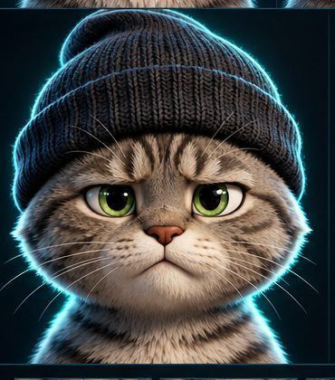
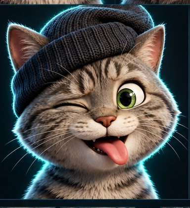
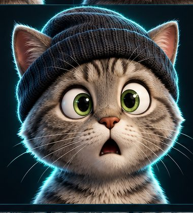
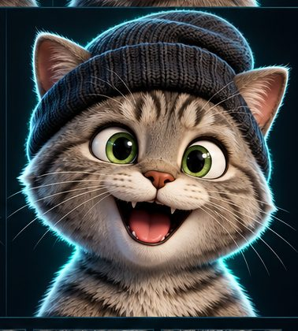
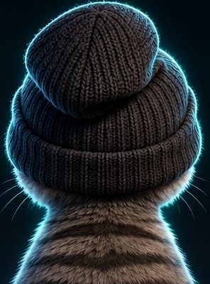
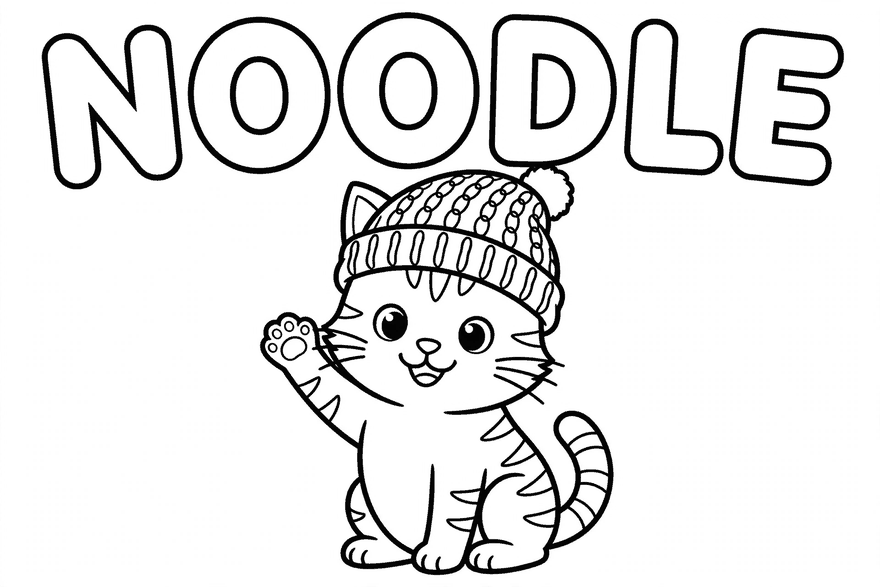
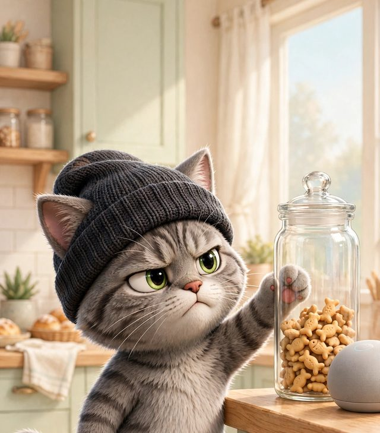
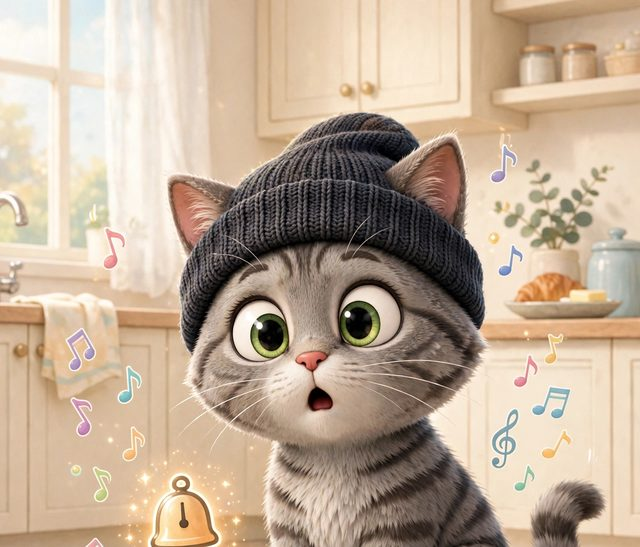
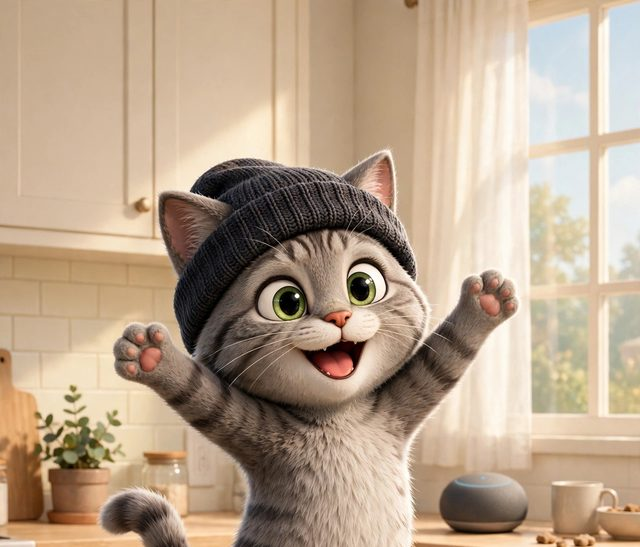

Noodle is a cat. He wears a beanie indoors, supervises the robot vacuum, and explains AI to kids and their grownups. This is his page. He shares it under protest.

নুডল বলে, আগে নাস্তা, তারপর AI।
Bengali. It means: Noodle says snacks first, AI second. He has priorities.

Monday Face
The Wink
Wait, It Talks?
Treat O'Clock
The Famous Beanie Monday Face, AgainOne cat, five moods, zero embarrassment. Collect them all. He already has.
Monday FaceThe treat jar was closed. Nobody consulted him. A full report has been filed with the sofa.
The WinkHe knows where the treats are hidden. He is not telling. This face has ended negotiations before.
Wait, It Talks?The little speaker answered him. Out loud. In the kitchen. He has questions and also follow-up questions.
Treat O'ClockSomeone said the word "treat" two rooms away. His ears filed the paperwork before his brain did.
The Beanie, From BehindStill famous. The beanie has its own fan mail. Most of it is from Noodle.
Fully interactive. Deeply regrettable. Go on, tap it.
Treats dispensed: 0
The jar is closed. Noodle has noticed. He is being very brave about it.
Free. Print it. Color the beanie any color you like. Noodle votes charcoal, but he is not the boss of your crayons.

Want the whole coloring pack? Follow @nionoai on Instagram and comment TREAT on any post. Noodle sends the pack himself. He types with one paw, so give him a minute.
One tiny story about a cat, a jar, and a voice in a box. Read it in English, then hear it in Bengali. Same jar. Same cat.

Page 1, Grumpy. Noodle wanted a treat. The jar was too high. Then a voice came out of the little speaker. "Hello, Noodle. How can I help?"

Page 2, Surprised. Noodle's eyes went wide. The speaker played his song. It set his treat timer. It even told a joke. A small voice, with big tricks!

Page 3, Joyful. The voice in the box is a virtual assistant. It is AI that listens, thinks, and answers. And it always saves Noodle a dance before treats.
পৃষ্ঠা ১, রাগী। নুডল একটা ট্রিট চাচ্ছিল। কিন্তু বয়ামটা ছিল অনেক উঁচুতে। ঠিক তখনই ছোট্ট স্পিকার থেকে একটা কণ্ঠ ভেসে এলো। "হ্যালো, নুডল। আমি কীভাবে সাহায্য করতে পারি?"
পৃষ্ঠা ২, অবাক। নুডলের চোখ বড় বড় হয়ে গেল। স্পিকারটা তার গান বাজিয়ে দিল। ট্রিটের টাইমার বসিয়ে দিল। এমনকি একটা মজার কৌতুকও শোনালো। ছোট্ট একটা কণ্ঠ, অথচ কত বড় বড় কেরামতি!
পৃষ্ঠা ৩, খুশি। বাক্সের ভেতরের এই কণ্ঠটাই হলো ভার্চুয়াল অ্যাসিস্ট্যান্ট। এটা এমন এআই, যে শোনে, ভাবে, আর উত্তর দেয়। আর ট্রিট খাওয়ার আগে নুডলের নাচের জন্য সে সবসময় একটু সময় বাঁচিয়ে রাখে।
Two words worth stealing: বয়াম (boyam) is the treat jar, and কেরামতি (keramoti) means clever tricks. Now you speak kitchen Bengali.
🎧 Listen to the chapter, read out loud at 1.5 speed, because Noodle gets excited:
Noodle Learns AI, the full pack: 10 chapters of Noodle explaining AI one treat at a time. Printable, made for parents and teachers to read with kids.
It lands on Gumroad on November 3. Chapter 1 above is free forever, because Noodle believes the first treat is always free.
NION AI Art · Noodle approves this page. He has not read it. · nion-hoq.ca